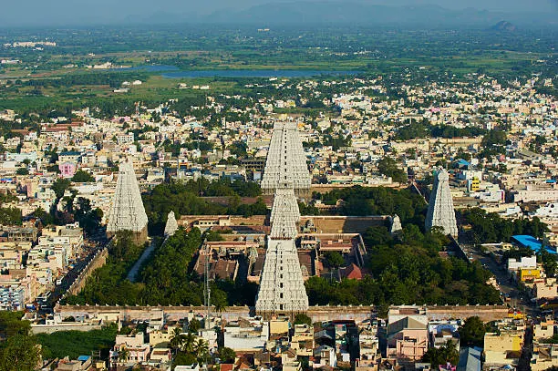

Places to visit
Tamil Nadu has various visitor attractions including within the city.
Tamil Nadu

Auroville
AurovilleIt is a universal town in Tamil Nadu, where people from diverse backgrounds live harmoniously. Its heart is the Matrimandir, a meditation centre amidst lush green gardens. This place is considered one of the best places in terms of Tamil Nadu tourism as it is the first and only internationally endorsed ongoing experiment in humanism and consciousness transformation.
Karaikudi
KaraikudiMarvel at the grand Chettinad mansions with expansive courtyards and intricate architecture at Karaikudi. This place is known for its cultural heritage and reflects the opulent lifestyle of the Chettiar community. While visiting, remember to indulge in Chettinad cuisine, characterised by aromatic and spicy dishes. Shop for souvenirs and traditional crafts at the local markets. So, if you are looking for the best tourist places in Tamil Nadu state for 2 days trip, add this fantastic destination to your itinerary.

Thiruvannamalai
ThiruvannamalaiAs a zealot and history buff, you can have a marvellous experience at Thiruvannamalai. It is renowned for its world-famous Arunachaleswarar Temple. Furthermore, the place houses Girivalam, a 14-kilometer pilgrimage around the sacred Arunachala Hill. In this haven, one can have a spiritual experience as Thiruvannamalai combines surreal and serene surroundings with a rich cultural heritage. As the place provides a unique atmosphere to all travellers, it is considered one of the Tamil Nadu famous places.
Bellikkal
BellikkalNestled in the Nilgiri Hills, Bellikkal is a captivating village recognized for its natural allure and tranquil ambience. The mist-covered mountains, lush-green scapes, and pleasant atmosphere bring all travellers an exhilarating experience. As nature enthusiasts and wildlife spotters, you can have the best time here as the village offers breathtaking natural views and wildlife witnessing opportunities. If you wish to have an off-the-beaten travel experience in Tamil Nadu, this is the best place to be.

Tenkasi
TenkasiStep into the charming town of Tamil Nadu, nestled at the foothills of the majestic Western Ghats. Its famous attraction is the Courtallam Falls, also known as the ‘Spa of the South’. Whether you seek solace amidst nature or rejuvenate, Tenkasi is the perfect place to be. You can have a splendid time visiting the Meenakshi Amman Temple as devotees. Additionally, the town hosts numerous festivities wherein you can participate and add a unique dimension to your vacation. So, glimpse into the rich culture and heritage of Tamil Nadu to have the best vacation with loved ones.

Kolukkumalai
KolukkumalaiPerched in the Western Ghats, Kolukkumalai is one of the best destinations for adventure and nature sightseeing. It is one of the highest tea plantations in the world, at an altitude of about 7,900 feet. From rugged 4/4 drive through steep mountain roads to trekking, you can enjoy thrilling adventures and feel the adrenaline flowing through your system. If you are looking for tourist places in Tamil Nadu for 4 days, remember to add this fantastic destination to your list. The cool climate and scenic vistas make it an ideal place for nature and outdoor enthusiasts.
Velliangiri
VelliangiriOften referred to as the ‘Kailash of the South’, the Velliangiri Hills offer a popular trekking route. It challenges trekkers with rugged terrain and rewarding scenic landscapes. The famous Velliangiri Temple is perched at the summit of the hill and is an important pilgrimage site dedicated to Lord Shiva. Hence, as trekkers and zealots, you can add this amazing place to your list of tourist places in Tamil Nadu India for couples or family.
Pachamalai Hills
Pachamalai HillsEmbark on a thrilling adventure in Tamil Nadu by exploring the challenging trails passing through forests and waterfalls. While trekking, the constant thought of encountering wildlife makes you feel excited and frightened simultaneously. The cool climate and the jaw-dropping natural views add a new layer of fun and enjoyment to your escapade. So, what awaits you? Step into the paradise for an invigorating travel experience.

Pondicherry
PondicherryAlso known as Puducherry, this is an ideal place for explorers, beach lovers, and experience-seekers interested in French culture and architecture. With many romantic places in Pondicherry, this Union Territory reeks of excitement and vibrancy. If you have had too much of Goa already, or even if you haven’t, it’s time you witness the charm of Pondy! In addition, travelling from Chennai to Pondicherry has been made much easier, and this is what attracts the young crowd to one of the best tourist attractions in Tamil Nadu and the land of beautiful beaches to rejuvenate and relax.

Coimbatore
CoimbatoreAlso known as the 'Manchester of India,' Coimbatore is a famous place among visitors in Tamil Nadu. The weather is pleasant all year round. Surrounded by various picnic spots, waterfalls and rivers, this city is bound to refresh your senses. Situated near the banks of the Noyyal River, Coimbatore is surrounded by the Western Ghats.